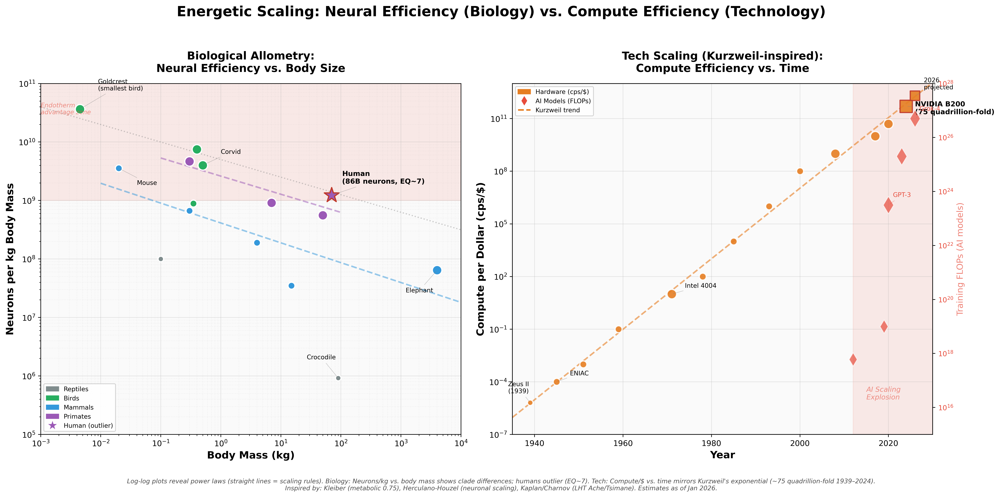

Energetic Scaling: Biology vs. Technology
Neural efficiency vs. body size (Biology) and compute efficiency vs. time (Tech) – both reveal power laws
Companion to AI Compute Timeline and Adoption Timeline – showing the fundamental scaling rules behind exponential progress.

💡 Key Insight: Log-log plots reveal power laws (straight lines = scaling rules). Humans are the biological outlier (EQ~7); AI is the technological outlier (75 quadrillion-fold compute/$ increase since 1939).
Dual-Panel Comparison
Left: Biological Allometry
- X-axis: Body mass (kg)
- Y-axis: Neurons per kg
- Pattern: Endotherms (birds/mammals) ~20x more neurons than reptiles
- Outlier: Human – 86B neurons, EQ~7
Right: Tech Scaling
- X-axis: Year (1939–2026)
- Y-axis: Compute per dollar (cps/$)
- Pattern: Kurzweil exponential (~2x/year)
- Outlier: AI FLOPs explosion post-2012
Selected Data Points
| Entity | Domain | Key Metric | Notes |
|---|
| Human | Biology | 86B neurons, 1.2×10⁹/kg | EQ~7 outlier |
| Goldcrest (bird) | Biology | 3.6×10¹⁰ neurons/kg | Highest density |
| Elephant | Biology | 257B neurons, 6.4×10⁷/kg | Large absolute, low density |
| NVIDIA B200 2024 | Tech | 5×10¹¹ cps/$ | 75 quadrillion-fold since 1939 |
| GPT-3 2020 | AI | 3.14×10²³ FLOPs | Scaling era begins |
Data Sources
- Neuronal scaling: Herculano-Houzel et al. (comparative neuroanatomy)
- Metabolic scaling: Kleiber's Law (0.75 exponent)
- Life History Theory: Kaplan, Charnov (Ache/Tsimane forager data)
- Tech price-performance: Kurzweil (2024 update)
- AI FLOPs: Epoch AI, scaling reports
{kind=link}
{kind=link}